Setup Trusted Artifact Signer on OpenShift
Overview
This guide covers the installation and configuration of Trusted Application Scanner (TAS) on OpenShift Container Platform. TAS on OpenShift leverages container orchestration for deployment and scalability.
In essence, it deploys the full infrastructure required for Signing and Verification, both keyful and keyless on Openshift. The important point here is - the "Signing and Verification Infrastructure" (in other words: TAS) is running on OpenShift.
BUT: You can *use* it anywhere you have access to the provided endpoints:
-
Developers signing their code commits on their workstations
-
CI/CD tasks running somewhere else (e.g. a Jenkins server on a VM)
-
An admission controller on EKS
-
A Tekton task running on some other OpenShift cluster, not the one we deployed to
The only requirement for usage is:
-
Signing
-
Keyless - If you want to use keyless signing, you need network connectivity to the TAS endpoints and your OIDC system
-
Keyful - With a pre-shared certificate bundle, you can sign without access to OIDC, but you lose some additional functionality (mapping of identity to signature / signing event). To generate tamper-proof evidence of the signature and the signing event, you need access to the TAS endpoints during signing.
-
-
Signature Verification
-
Online - For online verification, your signature and additional claims are validated against the TAS Transparency Database, therefore you need access to TAS
-
Offline - Offline verification is also possible (you need to transport some root certificates to the location where you want to verify - once during a root certificate rotation cycle)
-
The components that provide this functionality are:
| Luckily we don’t have to deploy, configure and manage all of these components individually, as there is an Operator for that. More on that a bit later. |
CTLog (Certificate Transparency Log)
A certificate transparency log is an immutable, append-only, cryptographically verifiable log that stores all certificates issued by Fulcio, making certificate issuance publicly auditable. The CT log returns a Signed Certificate Timestamp (SCT), which is a promise of inclusion in the log that can be verified without accessing the log itself. Note that the Certificate Transparency log is separate from the Rekor transparency log - Fulcio’s CT Log only stores issued certificates, while Rekor stores artifact signatures and attestations. The CT log is backed by Trillian and implements RFC6962.
Fulcio
Fulcio is a free root certification authority that issues short-lived, temporary certificates to an authorized identity and publishes them in a transparency log. Fulcio issues code signing certificates based on OpenID Connect email addresses or workload identities, with certificates valid for only 10 minutes. During issuance, Fulcio sets the certificate’s subject alternative name to match the subject from the OIDC ID token and includes the OIDC issuer in the certificate. It provides the option to use existing self-managed keys maintained in third-party key management systems.
Rekor
Rekor provides a transparent and auditable way to store and verify signatures and metadata about software artifacts such as images and provenance information using an immutable, tamper-evident record of metadata. Rekor provides a RESTful API-based server for validation and a transparency log for storage, with a CLI application available to make and verify entries, query the log for inclusion proof, and retrieve entries. Rekor is built on top of a verifiable data structure, allowing auditors to monitor the log for consistency to ensure it remains append-only and entries are never mutated or removed.
Trillian
Trillian uses a Merkle tree to implement a verifiable log where every record inserted becomes a new leaf in the tree, with the single tree head hash acting as a snapshot of all records in the log. Trillian is a transparent, highly scalable and cryptographically verifiable data store that implements an append-only log mode. Trillian implements the concepts from the Verifiable Data Structures white paper and serves data from a storage layer to allow scalability to extremely large trees. Trillian always signs tree head hashes with a private key creating a signed tree head that clients verify using a published public key.
TUF (The Update Framework)
TUF allows systems to automatically retrieve trusted keys and certificates used to verify artifacts. In an enterprise deployment of Trusted Artifact Signer, TUF serves as the mechanism for securely distributing and updating trust roots, including the Fulcio CA certificate, Rekor public key, and Certificate Transparency log public key. TUF protects against attacks by cryptographically signing metadata about these keys and certificates, allowing clients to verify they are receiving authentic, untampered updates. Unlike the public Sigstore instance with multiple keyholders, in an enterprise TAS deployment the TUF root key is managed by the organization itself, providing enterprises with full control over their trust root and the ability to customize which keys and certificates are distributed to their signing and verification clients.
Timestamp Authority (TSA)
Timestamp Authorities issue signed timestamps following the RFC 3161 specification, making timestamps immutable and verifiable. Time is critical for verifying that short-lived certificates issued by Fulcio were valid when artifacts were signed. Signed timestamps are associated with a signature through "countersigning," ensuring that the signature was created at a certain time, and verifiers use the TSA’s certificate chain to verify signed timestamps. Using signed timestamps from timestamp authorities mitigates the risk of manipulation and distributes trust, as anyone can operate a TSA.
Prerequisites
For authentication, Fulcio needs an OIDC provider - in this environment, we have configured installed Keycloak, with the "Red Hat Trusted Artifact Signer" realm and an OIDC Client.
|
We have chosen Keycloak, but from a purely technical perspective, any standards-compliant OIDC provider will do. From a product perspective, we support the following OIDC providers:
If you encounter an OIDC provider that is currently not supported at your customer, you can
Keycloak’s Identity Provider (IdP) federation is designed exactly for this scenario. Here’s how it works:
|

For our Keycloak example, we’ll use a couple of helper scripts again, so (if you haven’t done already) please open the {openshift_console_url}/terminal[terminal^,window="terminal"], logging in as {openshift_admin_user} / {openshift_admin_password}.
Then, clone the following repository:
| It’s a linux terminal, so use CTRL-SHIFT-V for pasting 🐧 |
git clone https://github.com/redhat-tssc-tmm/l3-enablement-helpers.git
cd l3-enablement-helpers
prerequisites/get-keycloak-info.shSo, you can go to the Keycloak Admin console and login with the username and password provided by the get-keycloak-info.sh script that you just executed.
In the "Clients" view, there is a "trusted-artifact-signer" client. This client will be used for authentication with Fulcio and therefore controls what data is associated with the authenticated user when fulcio (Trusted Artifact Signer) requests an authenticated identity.
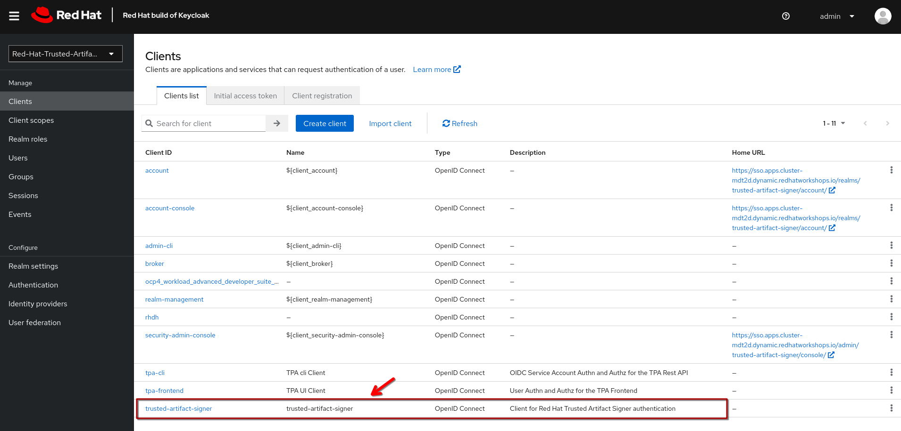
If you open that client, you will see that this is a regular OIDC public authentication client, using the Standard OIDC Authorisation flow:
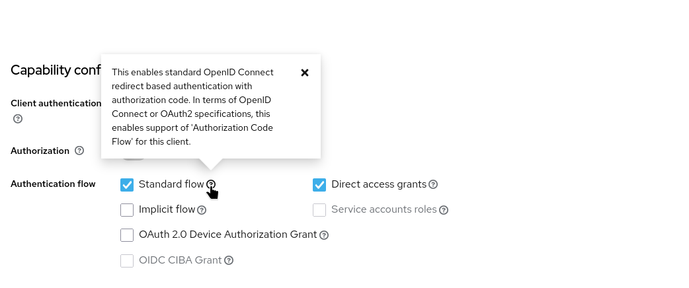 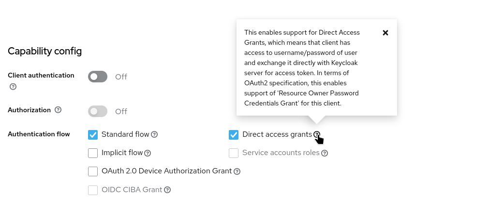
| There are configuration properties that you need to take care of (that go beyond the default client definition), should you build or configure a TAS OIDC Client: The Redirect URLs and three Client Scopes: |
Redirect URLs
In the "Access Settings", under "Valid redirect URIs", need an asterisk (*) to allow any URL to be redirected to after authentication, and a special OAuth 2.0 redirect URI that stands for "out-of-band" authorization: urn:ietf:wg:oauth:2.0:oob
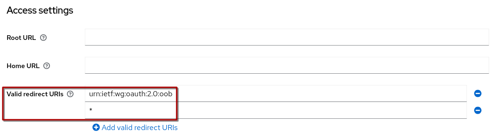
|
The
This basically enables "browser-based" authentication when there is no browser (such as a terminal, we’ll come to that later) - and the asterisk is required for the local |
Client Scopes
In the client definition, go "Client Scopes", then the "dedicated" Client scope, where we can define scope mappers for all users authenticating via this client:
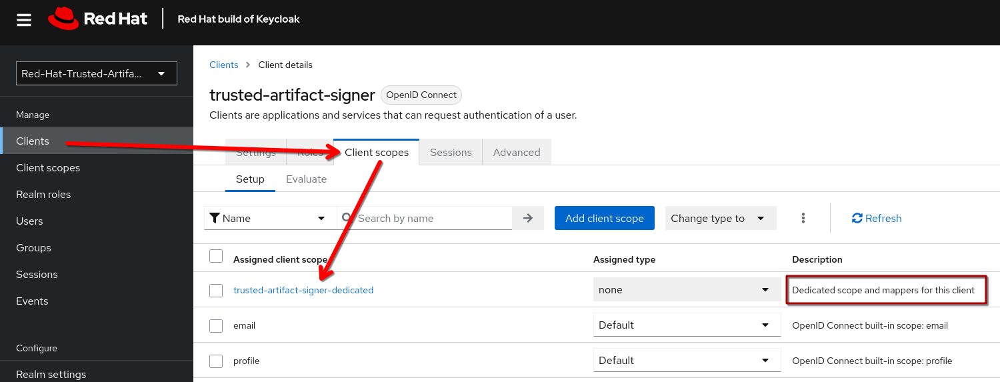
Here, we have to map three client scopes that fulcio expects to be part of an OAuth Token provided by the OAuth server:
-
email-verifiedwhich needs to be mapped to the user profileemailVerifiedproperty -
emailwhich needs to be mapped to the user profileemailproperty -
aud(Audience) which needs to be hard-coded (yes!) totrusted-artifact-signer. This needs to be part of the access token
So, all users authenticating via this client, will have their email and email status part of their ID token, as well as the Audience (aud) defined as trusted-artifact-signer.
Fulcio will not allow authentication via an arbitrary client, it will validate the existence of the aud token - also will it not allow authentication by users who haven’t verified their email.
|
You could of course hardcode the Should you want to experiment with the upstream sigstore deployment, make sure your client gives the |
Operator Installation
The Trusted Artifact Signer Operator has already been installed in this environment, as we have a fully functional instance already running. Therefore, we’ll focus on the second step - deploying and configuring an instance.
For sake of completeness - the Operator can be found on {openshift_console_url}/operatorhub/all-namespaces?keyword=trusted+artifact[OperatorHub^,window="console"]
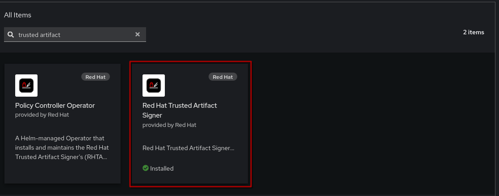
The typical installation would install the operator in openshift-operators and have a deployment in one (or more) namespaces. Our pre-installed and configured TAS installation in this environment is exactly that:
-
Operator in {openshift_console_url}/k8s/cluster/projects/openshift-operators[
openshift-operators^,window="console"] -
Instance in {openshift_console_url}/k8s/cluster/projects/tssc-tas[
tssc-tas^,window="console"]
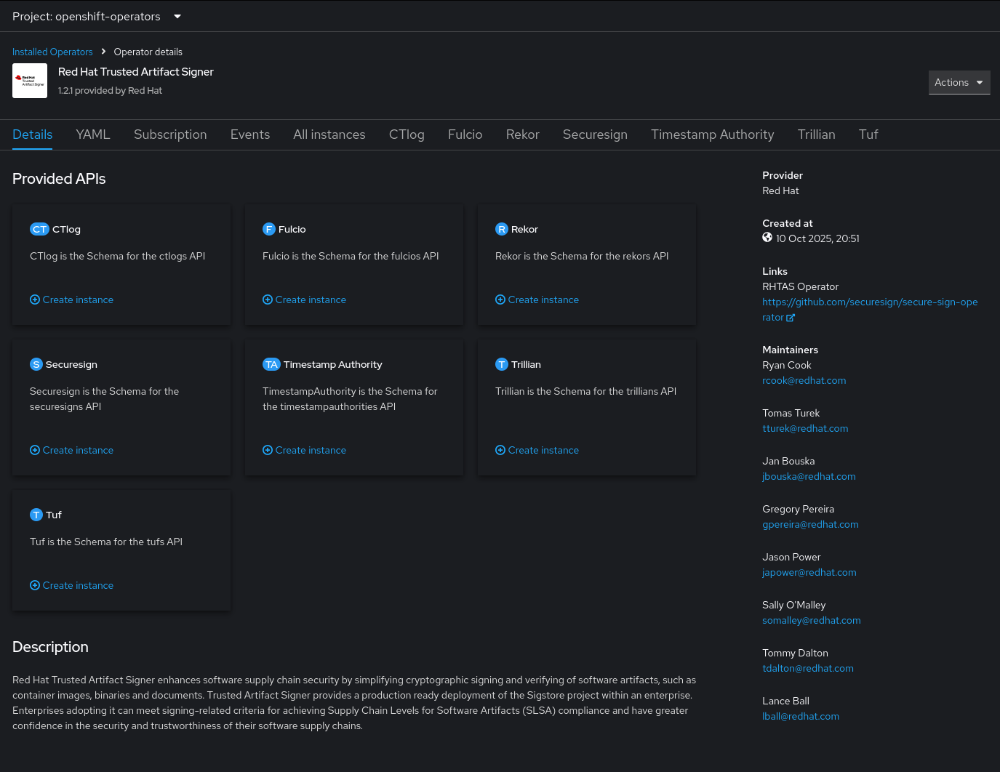
So, we’ll skip the installation of the operator itself, but will install (deploy) and configure a new instance in our own namespace: student-tas
So, either create a new namespace student-tas via the {openshift_console_url}[admin console^,window="console"], or if you have the {openshift_console_url}/terminal[terminal^,window="terminal"] still open, via
oc new-project student-tasEither way, all the following instructions will use this namespace (and URLs generated from this namespace).
Being an operator, you can install it manually via the console or by deploying the Custom Resource to your namespace.
|
As outlined above, Trusted Artifact Signer consists of a number of components that all need to work together (the structure is inherited from the sigstore project)- but the good news is, you don’t have to manage them manually. 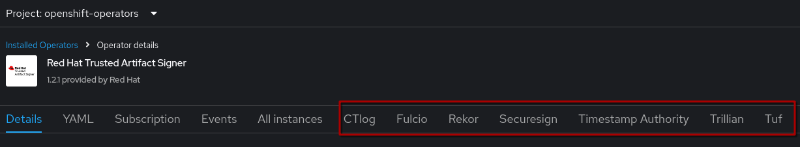 All we need to do is instantiate a new |
So, using the console, let’s go to the {openshift_console_url}/k8s/ns/student-tas/operators.coreos.com~v1alpha1~ClusterServiceVersion?cluster-service-version=trusted["Installed Operators" view^,window="console"] from within our namespace:
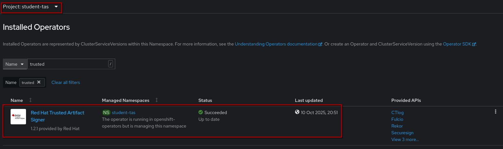
Open the operator and create a "Securesign" here in the student-tas namespace. It should automatically switch to the YAML view, where we have to set a few parameters - in the order of importance:
1) The OIDC Issuer and OIDC IssuerURL - these are the only mandatory changes. Actually, just the URL (which is where Fulcio will request authentication) - the "Issuer" is a string by which the OIDC Provider will be identified throughout the flow, so using the URL as a name is a way of uniquely identifying the provider, in case you have multiple.
| You can have multiple OIDC providers configured - when signing, you tell fulcio which one to use. Fulcio will then have you challenged by the appropriate provider. |
2) The certificate configuration - certificates issued by Fulcio will have this configuration, therefore, when inspecting signatures, you will see this information. Not a technical requirement to change it from the default values, but you will want to :-)
3) The k8s Securesign name - you should change to a meaningful name for your deployment and change every occurrence of securesign-sample to a better name.
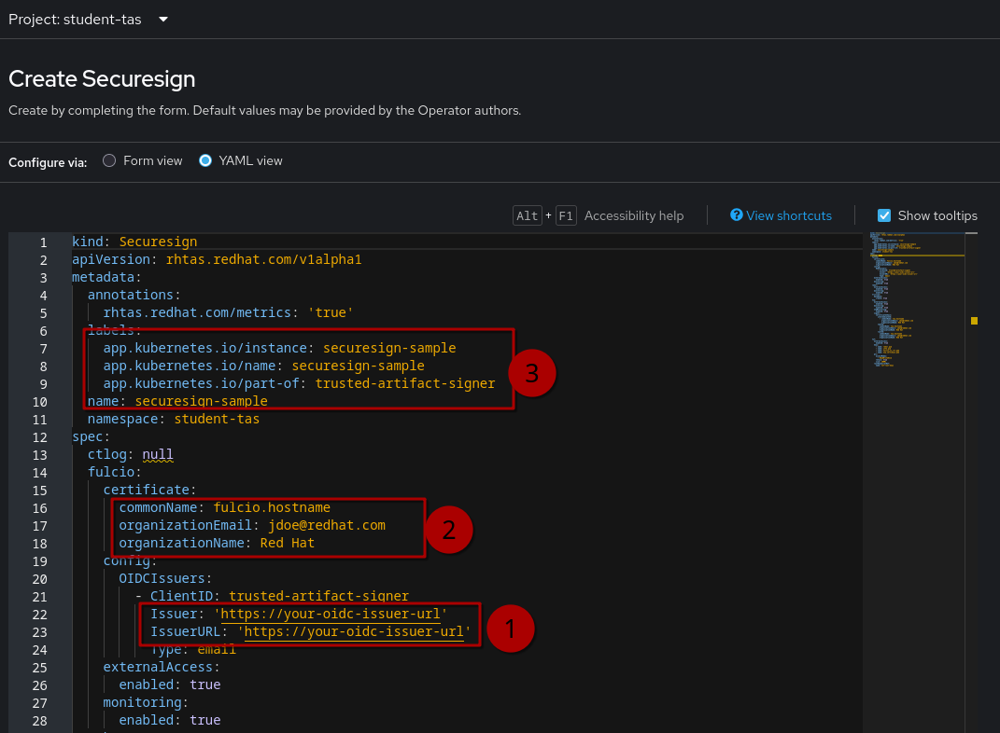
Click & Expand: Here’s a full Securesign for you
Here we have a full example tailored to our environment - feel free to either change the default from the operator or copy & paste this one.
kind: Securesign
apiVersion: rhtas.redhat.com/v1alpha1
metadata:
annotations:
rhtas.redhat.com/metrics: 'true'
labels:
app.kubernetes.io/instance: student-securesign
app.kubernetes.io/name: student-securesign
app.kubernetes.io/part-of: trusted-artifact-signer
name: student-securesign
namespace: student-tas
spec:
ctlog: null
fulcio:
certificate:
commonName: student.tas.signature
organizationEmail: signing-authority@redhat.com
organizationName: rhads-learners
config:
OIDCIssuers:
- ClientID: trusted-artifact-signer
Issuer: 'https://sso.{openshift_cluster_ingress_domain}/realms/trusted-artifact-signer'
IssuerURL: 'https://sso.{openshift_cluster_ingress_domain}/realms/trusted-artifact-signer'
Type: email
externalAccess:
enabled: true
monitoring:
enabled: true
rekor:
externalAccess:
enabled: true
monitoring:
enabled: true
trillian:
database:
create: true
tsa:
externalAccess:
enabled: true
monitoring:
enabled: true
ntpMonitoring:
enabled: true
signer:
certificateChain:
intermediateCA:
- commonName: timestamps.tas
organizationEmail: signing-authority@redhat.com
organizationName: Red Hat
leafCA:
commonName: timestamps.tas
organizationEmail: signing-authority@redhat.com
organizationName: Red Hat
rootCA:
commonName: timestamps.tas
organizationEmail: signing-authority@redhat.com
organizationName: Red Hat
tuf:
externalAccess:
enabled: true
keys:
- name: rekor.pub
- name: ctfe.pub
- name: fulcio_v1.crt.pem
- name: tsa.certchain.pem
pvc:
accessModes:
- ReadWriteOnce
retain: true
size: 100Mi
rootKeySecretRef:
name: tuf-root-keysCreate your instance, then open it and wait a moment until all Conditions (especially the top "Ready") are true
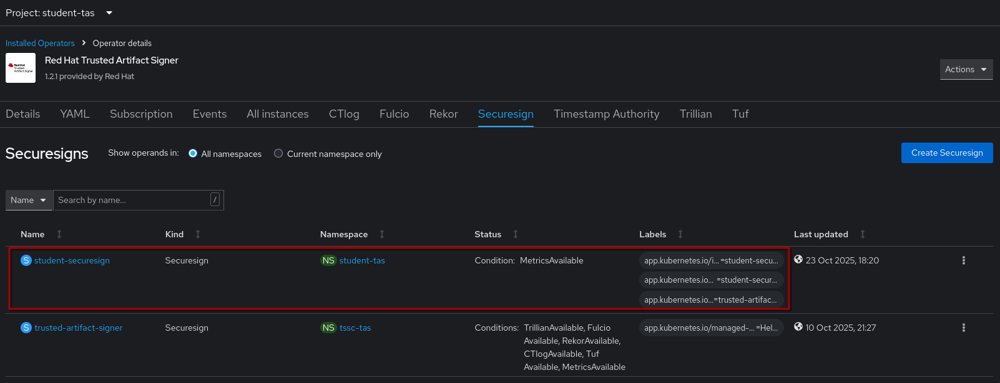
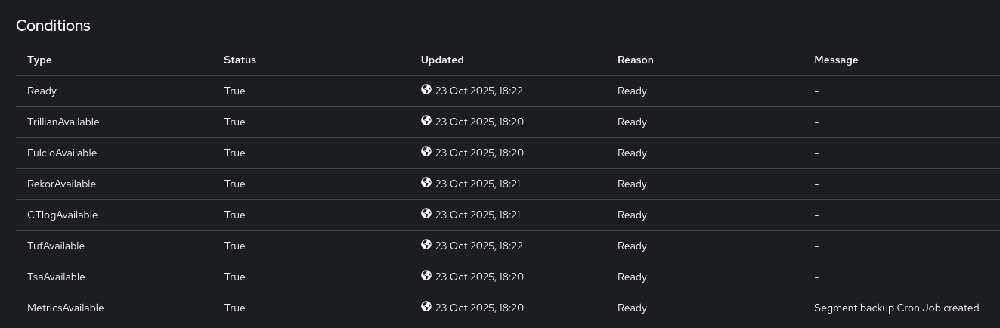
As you might have guessed, instead of installing via the Console, you also could’ve copied the Securesign from the collapsible section above, created a file via vim or nano and simply applied it apply -f mySecureSign.yaml.
|
Verification
|
To verify that signing and verification capabilities are working as expected, especially with container images, we need to run Therefore, we have created a terminal ("Podman Terminal") that can do that and also has the required tools preinstalled. If you haven’t already done so, please open your {openshift_console_url}/terminal[OpenShift Terminal^,window="terminal"] and clone the "helpers" repository: Click & Expand to see the terminal outputTerminal deployment output: The last command copies the Cluster’s OAuth Configuration and deploys the new terminal (our "Podman Terminal") - if you should see a login request, login with the same admin credentials ( You should now have a new terminal here that we will be using for the verification steps. |
In the "Podman Terminal", you have the cli-tools available that are the foundation of signing and verification with Trusted Artifact Signer (sigstore), namely
| Tool | Description |
|---|---|
|
A tool for container signing, verification, and storage in an OCI registry. It allows you to sign and verify container images and other artifacts, storing signatures and signed attestations alongside the artifacts themselves. Cosign integrates with Trusted Artifact Signer’s/Sigstore’s keyless signing infrastructure. |
|
A tool that enables keyless signing of Git commits using Trusted Artifact Signer/Sigstore. It replaces the traditional GPG-based commit signing workflow with a more automated approach using ephemeral keys and OIDC authentication, with signatures stored in Rekor’s transparency log. |
|
A command-line client for interacting with Rekor, Trusted Artifact Signer’s/Sigstore’s transparency log service. It allows you to upload artifact signatures, query the log for existing entries, verify signatures, and search for specific artifacts or public keys in the transparency log. |
|
A command-line tool for Conforma (formerly Enterprise Contract) that securely verifies supply chain artifacts and enforces policies about how they were built and tested. It provides a manageable, scalable, and declarative way to ensure container images and other artifacts meet security and compliance requirements. |
In order to use the clients, we need to tell them where the appropriate endpoints are, such as the Fulcio certificate service, the OIDC Server and the Rekor endpoint for logging signing events.
There are two ways to do that
-
via command-line parameter
-
via environment variables
Since these tools will often be used in an automated fashion (e.g. in a CI/CD pipeline), using the commandline is discouraged, because that would add those parameters to the log. Furthermore, most CI/CD systems have ways to set environment variables for their tasks to consume. Going forward, we will use the environment variable option. For the commandline options, check the respective --help commands.
Our deployment environment
The "Podman Terminal" has the endpoint variables set to the pre-deployed TAS in the tssc-tas namespace. You can check the configuration by typing help.
Click & Expand to see the terminal output
podman-terminal:/workspace$ help
=== Trusted Artifact Signer (TAS) Environment Variables ===
TUF Configuration:
TUF_URL: https://tuf-tssc-tas.apps.cluster-mdt2d.dynamic.redhatworkshops.io
COSIGN_MIRROR: https://tuf-tssc-tas.apps.cluster-mdt2d.dynamic.redhatworkshops.io
COSIGN_ROOT: https://tuf-tssc-tas.apps.cluster-mdt2d.dynamic.redhatworkshops.io/root.json
OIDC Configuration:
OIDC_ISSUER_URL: https://sso.apps.cluster-mdt2d.dynamic.redhatworkshops.io/realms/trusted-artifact-signer
COSIGN_OIDC_CLIENT_ID: trusted-artifact-signer
COSIGN_OIDC_ISSUER: https://sso.apps.cluster-mdt2d.dynamic.redhatworkshops.io/realms/trusted-artifact-signer
COSIGN_CERTIFICATE_OIDC_ISSUER: https://sso.apps.cluster-mdt2d.dynamic.redhatworkshops.io/realms/trusted-artifact-signer
SIGSTORE_OIDC_ISSUER: https://sso.apps.cluster-mdt2d.dynamic.redhatworkshops.io/realms/trusted-artifact-signer
Fulcio Configuration:
COSIGN_FULCIO_URL: https://fulcio-server-tssc-tas.apps.cluster-mdt2d.dynamic.redhatworkshops.io
SIGSTORE_FULCIO_URL: https://fulcio-server-tssc-tas.apps.cluster-mdt2d.dynamic.redhatworkshops.io
Rekor Configuration:
COSIGN_REKOR_URL: https://rekor-server-tssc-tas.apps.cluster-mdt2d.dynamic.redhatworkshops.io
SIGSTORE_REKOR_URL: https://rekor-server-tssc-tas.apps.cluster-mdt2d.dynamic.redhatworkshops.io
REKOR_REKOR_SERVER: https://rekor-server-tssc-tas.apps.cluster-mdt2d.dynamic.redhatworkshops.io
Other Settings:
COSIGN_YES: true
TIP:
You can set these variables to endpoints from a different TAS installation
by calling "source ~/setup-tas-environment.sh <your namespace>"
i.e. "source ~/setup-tas-environment.sh student-tas"
You can reset to the default TAS installation by either
-- run "source ~/setup-tas-environment.sh tssc-tas"
-- type 'exit' and reconnect to the terminal
-- nuking the terminal pod using the 'terminal-reset' command
podman-terminal:/workspace$Since we want to verify our deployment to student-tas, we’ll use the command to temporarily reconfigure to our TAS installation:
source ~/setup-tas-environment.sh student-taspodman-terminal:/workspace$ source ~/setup-tas-environment.sh student-tas
[INFO] Initializing TAS (Trusted Artifact Signer) environment variables...
[INFO] Using TAS namespace: student-tas
[INFO] TAS namespaces found. Retrieving configuration...
[INFO] Retrieving TUF URL...
[INFO] Retrieving Keycloak route...
[INFO] Retrieving Fulcio URL...
[INFO] Retrieving Rekor URL...
[INFO] Adding TAS environment variables to ~/.bashrc...
[INFO] TAS environment variables already configured in .bashrc
[INFO] TAS environment variables initialized successfully!
[INFO] TUF URL: https://tuf-student-tas.apps.cluster-mdt2d.dynamic.redhatworkshops.io
[INFO] OIDC Issuer URL: https://sso.apps.cluster-mdt2d.dynamic.redhatworkshops.io/realms/trusted-artifact-signer
[INFO] Fulcio URL: https://fulcio-server-student-tas.apps.cluster-mdt2d.dynamic.redhatworkshops.io
[INFO] Rekor URL: https://rekor-server-student-tas.apps.cluster-mdt2d.dynamic.redhatworkshops.io
[INFO] Setting up global git configuration...
[INFO] Configuring user information...
[INFO] Configuring credential helper... INSECURE, just for workshop convenience!
[INFO] Configuring signing settings...
[INFO] Configuring gitsign settings...
[INFO] Git configuration completed successfully!
[INFO] Configured settings:
[INFO] User: Wile E. Coyote <boom@acme.com>
[INFO] Fulcio URL: https://fulcio-server-student-tas.apps.cluster-mdt2d.dynamic.redhatworkshops.io
[INFO] OIDC Issuer: https://sso.apps.cluster-mdt2d.dynamic.redhatworkshops.io/realms/trusted-artifact-signer
[INFO] Rekor URL: https://rekor-server-student-tas.apps.cluster-mdt2d.dynamic.redhatworkshops.io
[INFO] Client ID: trusted-artifact-signerIf you type help again, you should now see all environment variables set to their endpoints in the student-tas namespace (with the exception of the OIDC endpoints, since we’re using the same Keycloak, Realm and Client for all TAS installations here).
Signing and verifying container images
As the first step, we need to "initialize" cosign - this downloads public trust root certificates from the TUF endpoint that our TAS instance provides:
cosign initializepodman-terminal:/workspace$ cosign initialize
WARNING: Fetching initial root from URL without providing its checksum is deprecated and will be disallowed in a future Cosign release. Please provide the initial root checksum via the --root-checksum argument.
Root status:
{
"local": "/home/student/.sigstore/root",
"remote": "https://tuf-student-tas.apps.cluster-mdt2d.dynamic.redhatworkshops.io",
"metadata": {
"root.json": {
"version": 1,
"len": 4128,
"expiration": "22 Oct 26 16:21 UTC",
"error": ""
},
"snapshot.json": {
"version": 1,
"len": 994,
"expiration": "22 Oct 26 16:21 UTC",
"error": ""
},
"targets.json": {
"version": 1,
"len": 2416,
"expiration": "22 Oct 26 16:21 UTC",
"error": ""
},
"timestamp.json": {
"version": 1,
"len": 995,
"expiration": "22 Oct 26 16:21 UTC",
"error": ""
}
},
"targets": [
"fulcio_v1.crt.pem",
"trusted_root.json",
"tsa.certchain.pem",
"ctfe.pub",
"rekor.pub"
]
}For testing, we’ll create an empty container image and push it to the ttl.sh ephemeral container registry.
UUID=$(uuidgen | cut -d'-' -f1)
IMAGE_NAME="ttl.sh/rhtas/test-image-${UUID}:1h"
echo "FROM scratch" > ./tmp.Dockerfile
podman build . -f ./tmp.Dockerfile -t $IMAGE_NAME
podman push $IMAGE_NAMEpodman-terminal:/workspace$ UUID=$(uuidgen | cut -d'-' -f1)
IMAGE_NAME="ttl.sh/rhtas/test-image-${UUID}:1h"
echo "FROM scratch" > ./tmp.Dockerfile
podman build . -f ./tmp.Dockerfile -t $IMAGE_NAME
podman push $IMAGE_NAME
STEP 1/1: FROM scratch
COMMIT ttl.sh/rhtas/test-image-4be1a048:1h
--> 555cca0b8910
Successfully tagged ttl.sh/rhtas/test-image-4be1a048:1h
555cca0b89106c0b78185f2091e7708384ee7694f555d100ee5c7ba50e44dbcd
Getting image source signatures
Copying config 555cca0b89 done |
Writing manifest to image destinationNow we’ll sign it:
cosign sign -y $IMAGE_NAMESince we are running in a terminal session with no browser, we are presented with a URL that we need to open, pointing to our SSO (Keycloak) server. If we ran this locally on our desktops, a browser window would open directly.
podman-terminal:/workspace$ cosign sign -y $IMAGE_NAME
Generating ephemeral keys...
Retrieving signed certificate...
The sigstore service, hosted by sigstore a Series of LF Projects, LLC, is provided pursuant to the Hosted Project Tools Terms of Use, available at https://lfprojects.org/policies/hosted-project-tools-terms-of-use/.
Note that if your submission includes personal data associated with this signed artifact, it will be part of an immutable record.
This may include the email address associated with the account with which you authenticate your contractual Agreement.
This information will be used for signing this artifact and will be stored in public transparency logs and cannot be removed later, and is subject to the Immutable Record notice at https://lfprojects.org/policies/hosted-project-tools-immutable-records/.
By typing 'y', you attest that (1) you are not submitting the personal data of any other person; and (2) you understand and agree to the statement and the Agreement terms at the URLs listed above.
error opening browser: exec: "xdg-open": executable file not found in $PATH
Go to the following link in a browser:
https://sso.apps.cluster-qkw52.dynamic.redhatworkshops.io/realms/trusted-artifact-signer/protocol/openid-connect/auth?access_type=online&client_id=trusted-artifact-signer&code_challenge=DxXBBX3iEO2fNVNRZ-oEftgt5FwLYX_vsDixiRJ1Tnc&code_challenge_method=S256&nonce=34fQJpS9CBW6stygUkIaHgOT6tM&redirect_uri=urn%3Aietf%3Awg%3Aoauth%3A2.0%3Aoob&response_type=code&scope=openid+email&state=34fQJoeiPNVwNTDFcTOzfVROYdm
Enter verification code:Open the URL and login with either {rhdh_user} and {rhdh_user_password} or as {openshift_admin_user} with {openshift_admin_password} and copy the resulting code:
| Make sure to copy the whole code, which is longer than the text box. |
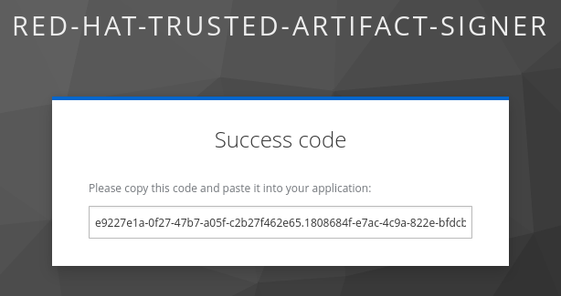
After pasting it in, cosign signs the image, pushes the signature to the repository and creates an entry in the rekor transparency database (tlog = "Transparency Log" = Rekor):
Enter verification code: 77ca50a9-1427-469a-a496-0d62e54d4b94.2e7ce116-84a4-40a4-bd30-94ef56b5d000.22114fef-296a-47ad-9333-f37452ce1033
Successfully verified SCT...
WARNING: Image reference ttl.sh/rhtas/test-image-4be1a048:1h uses a tag, not a digest, to identify the image to sign.
This can lead you to sign a different image than the intended one. Please use a
digest (example.com/ubuntu@sha256:abc123...) rather than tag
(example.com/ubuntu:latest) for the input to cosign. The ability to refer to
images by tag will be removed in a future release.
tlog entry created with index: 18
Pushing signature to: ttl.sh/rhtas/test-image-4be1a048|
To test our deployment, signing an image via an image tag ( |
With cosign tree we can quickly check what Supply Chain Security Artifacts (Signatures, Attestations, SBOMs,…) have been attached to this image:..
cosign tree $IMAGE_NAMEpodman-terminal:/workspace$ cosign tree $IMAGE_NAME
📦 Supply Chain Security Related artifacts for an image: ttl.sh/rhtas/test-image-4be1a048:1h
└── 🔐 Signatures for an image tag: ttl.sh/rhtas/test-image-4be1a048:sha256-a07d920dbb3de8e69dff08c3e94fb4fe1df7e7f859da67941673ff7e0f3769f7.sig
└── 🍒 sha256:9937a84e9e6e5ddb9612521094563b78f398292431b8f137144c2ac142f13e1aWith cosign verify we can verify that
* we have a valid signature
* that it was signed by the OIDC identity in question
* that the identity came from the OIDC system in question (here, we don’t provide an OIDC system, cosign reads that from the environment if the command line parameter isn’t given)
(we add a | jq for better readability of the output)
cosign verify --certificate-identity=user1@demo.redhat.com $IMAGE_NAME | jq(if you signed with the admin user, you will get an error - use admin@demo.redhat.com instead)
If we want to explicitly verify that the identity user1@demo.redhat.com was verified against our OIDC server and realm https://sso.{openshift_cluster_ingress_domain}/realms/trusted-artifact-signer, we can add the --certificate-oidc-issuer parameter:
cosign verify --certificate-identity user1@demo.redhat.com --certificate-oidc-issuer https://sso.{openshift_cluster_ingress_domain}/realms/trusted-artifact-signer $IMAGE_NAME | jqWe can also use regular expressions, using --certificate-identity-regexp and --certificate-oidc-issuer-regexp if we want to e.g. verify that the image was signed by a Red Hatter that authenticated against any OIDC system running on the redhatworkshops.io domain:
cosign verify --certificate-identity-regexp '.*@.*redhat\.com$' --certificate-oidc-issuer-regexp '\.redhatworkshops\.io/' $IMAGE_NAME | jqWe can also verify that our signing event and associated metadata has been recorded in the write-only transparency database (Rekor).
In our TAS deployment in the student-tas namespace, we have the Rekor Search UI that we can use to search for emails, log indexes (note the tlog index when signing), hashes or UUIDs:
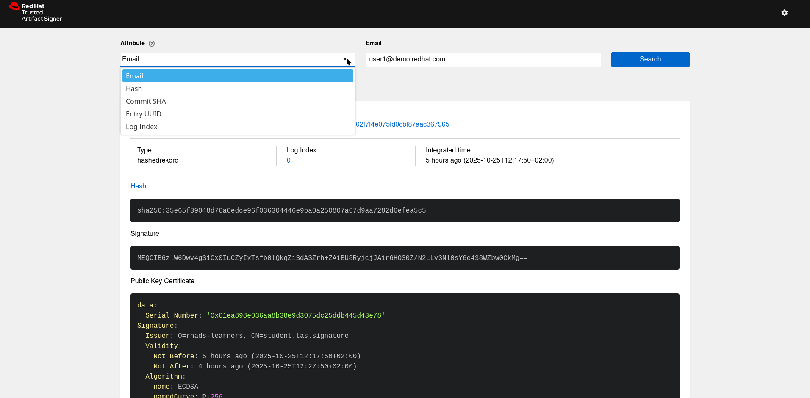
(If you look closely, you can also see that this signature was issued by the organisation O=rhads-learners with the common name (CN) CN=student.tas.signature )
Signing and verifying git commits
For interacting with git we’re using the gitsign cli tool. However, to use it, we also need the "trust root" from the TUF endpoint (which is downloaded to the user home under ~/.sigstore - also see the output from the cosign initialize command, which outputs the location of the local and remote trust root )
If you have already done it in the previous step, you can skip it, but we need to issue cosign initialize at least once for the local environment to be initialized.
|
Going forward - if you work with multiple TAS/sigstore instances, especially if these are different versions - sometimes you get errors when signing or verifying artifacts that can’t be explained, since you’ve done everything by the book. In these cases, it’s a good idea to delete the |
To test git commit signing, we need a git repo first - we can use the l3-enablement-helpers we have already used - committing is fine, we’re not pushing 😇
So, let’s open our Podman Terminal again and clone it:
git clone https://github.com/redhat-tssc-tmm/l3-enablement-helpers.git
cd l3-enablement-helpers
touch this-is-an-empty-file.txt
git add .
git statuspodman-terminal:/workspace$ git clone https://github.com/redhat-tssc-tmm/l3-enablement-helpers.git
cd l3-enablement-helpers
touch this-is-an-empty-file.txt
git add .
git status
Cloning into 'l3-enablement-helpers'...
remote: Enumerating objects: 109, done.
remote: Counting objects: 100% (109/109), done.
remote: Compressing objects: 100% (81/81), done.
remote: Total 109 (delta 54), reused 77 (delta 28), pack-reused 0 (from 0)
Receiving objects: 100% (109/109), 28.61 KiB | 14.30 MiB/s, done.
Resolving deltas: 100% (54/54), done.
On branch main
Your branch is up to date with 'origin/main'.
Changes to be committed:
(use "git restore --staged <file>..." to unstage)
new file: this-is-an-empty-file.txt
podman-terminal:/workspace/l3-enablement-helpers (main) [+]$
Please make sure your TAS endpoints are still configured to point to your student-tas namespace deployment by typing 'help'. Otherwise you’ll verify that the pre-configured lab environment is working (which we sure hope it is… 😉 )
|
Before we commit our change, let’s take a look at our git configuration:
git config --global --list...
commit.gpgsign=true
tag.gpgsign=true
gpg.x509.program=gitsign
gpg.format=x509
...This section tells git to use gpg-style signing (similar to the "traditional" private key based signing), the format (x509) and which program should provide the key/certificate. In our case, this is gitsign (that we pre-installed for your convenience).
...
gitsign.fulcio=https://fulcio-server-student-tas.apps.cluster-mdt2d.dynamic.redhatworkshops.io
gitsign.issuer=https://sso.apps.cluster-mdt2d.dynamic.redhatworkshops.io/realms/trusted-artifact-signer
gitsign.rekor=https://rekor-server-student-tas.apps.cluster-mdt2d.dynamic.redhatworkshops.io
gitsign.clientid=trusted-artifact-signer
...This section tells gitsign where the various endpoints are, so it can request a signing certificate and where it can store the signing event metadata.
We have chosen this path for convenience - with this configuration, git will automatically sign every commit (and tag) we create. For sake of completeness - we could also just commit without signing and then sign the commit later, using the gitsign binary directly, using the commit hash.
|
Now, let’s commit this change:
git commit -m "added an empty file to test commit signing"Again, you’ll be asked to copy the URL to a browser, login and then copy the result to the terminal again (if you’re not asked to login, but directly see the code, that’s because your Keycloak login session is still active. )
If you’d run this from your workstation (as a regular developer would do), the browser window would open directly - and if your session was still valid, you would just see a success message.
| Don’t worry if "nothing happens" when you paste the code to your terminal session - gitsign doesn’t echo the code. Just hit return after pasting. If it doesn’t work, the commit won’t happen and you can try again. |
podman-terminal:/workspace/l3-enablement-helpers (main) [+]$ git commit -m "added an empty file to test commit signing"
error opening browser: exec: "xdg-open": executable file not found in $PATH
Go to the following link in a browser:
https://sso.apps.cluster-mdt2d.dynamic.redhatworkshops.io/realms/trusted-artifact-signer/protocol/openid-connect/auth?access_type=online&client_id=trusted-artifact-signer&code_challenge=4OvrJrKnGjzzU-ENJck2tzNLTEhdJ1JnLmP04YjR52M&code_challenge_method=S256&nonce=34ZBbWJBdMmpAa3RQwHuVxSZmNk&redirect_uri=urn%3Aietf%3Awg%3Aoauth%3A2.0%3Aoob&response_type=code&scope=openid+email&state=34ZBbcXNytmleT7V3DxndgnbIdV
Enter verification code:
tlog entry created with index: 1
[main d22de69] added an empty file to test commit signing
1 file changed, 0 insertions(+), 0 deletions(-)
create mode 100644 this-is-an-empty-file.txt
podman-terminal:/workspace/l3-enablement-helpers (main)$To verify your commit signature, you’d use gitsign verify - however, the traditional git signature verification means also work (git log --show-signature, git verify-commit), but they don’t verify the inclusion of the OIDC Identity and OIDC Issuer for that identity (called "certificate claims"), therefore are less secure:
podman-terminal:/workspace/l3-enablement-helpers (main)$ git log --show-signature -1
commit d22de699250b5112928298d844a93eab34452ef1 (HEAD -> main)
tlog index: 1
gitsign: Signature made using certificate ID 0x1d599ea7405ba2518fc81f7dab53b9f25373478c | CN=student.tas.signature,O=rhads-learners
gitsign: Good signature from [user1@demo.redhat.com](https://sso.apps.cluster-mdt2d.dynamic.redhatworkshops.io/realms/trusted-artifact-signer)
Validated Git signature: true
Validated Rekor entry: true
Validated Certificate claims: false
WARNING: git verify-commit does not verify cert claims. Prefer using `gitsign verify` instead.
Author: Wile E. Coyote <boom@acme.com>
Date: Sat Oct 25 16:54:44 2025 +0000
added an empty file to test commit signingpodman-terminal:/workspace/l3-enablement-helpers (main)$ git verify-commit HEAD
tlog index: 1
gitsign: Signature made using certificate ID 0x1d599ea7405ba2518fc81f7dab53b9f25373478c | CN=student.tas.signature,O=rhads-learners
gitsign: Good signature from [user1@demo.redhat.com](https://sso.apps.cluster-mdt2d.dynamic.redhatworkshops.io/realms/trusted-artifact-signer)
Validated Git signature: true
Validated Rekor entry: true
Validated Certificate claims: false
WARNING: git verify-commit does not verify cert claims. Prefer using `gitsign verify` instead.So, let’s do it securely
gitsign verify --certificate-identity=user1@demo.redhat.com --certificate-oidc-issuer=$SIGSTORE_OIDC_ISSUER HEADpodman-terminal:/workspace/l3-enablement-helpers (main)$ gitsign verify --certificate-identity=user1@demo.redhat.com --certificate-oidc-issuer=$SIGSTORE_OIDC_ISSUER HEAD
tlog index: 1
gitsign: Signature made using certificate ID 0x1d599ea7405ba2518fc81f7dab53b9f25373478c | CN=student.tas.signature,O=rhads-learners
gitsign: Good signature from [user1@demo.redhat.com](https://sso.apps.cluster-mdt2d.dynamic.redhatworkshops.io/realms/trusted-artifact-signer)
Validated Git signature: true
Validated Rekor entry: true
Validated Certificate claims: true
podman-terminal:/workspace/l3-enablement-helpers (main)$
With gitsign verify, you can also use the --certificate-identity-regexp and --certificate-oidc-issuer-regexp for use with regular expressions, but we’ll skip this step here.
|
Verifying signatures and attestations
Using Conforma (TPFKAEC - The Project Formerly Known As Enterprise Contract 😆), we can not only validate the image signature, but also apply policies to the image and its associated attestations (metadata about the image, its provenance, etc.)
Here, we’ll use a simple example without external policies - the ec client has a minimal set of built-in policies that check the image signature, if any attached attestations have been signed and are syntactically correct.
Since we don’t know if our ephemeral image is still there, let’s quickly create a new one in our Podman Terminal.
For convenience, we’ll include the commands for setting the environment to our TAS deployment in student-tas and the cosign initialize so we’re all set for the "real" exercise:
cd /workspace
source ~/setup-tas-environment.sh student-tas
cosign initialize
echo "FROM scratch" > ./tmp.Dockerfile
podman build . -f ./tmp.Dockerfile -t ttl.sh/rhtas/test-image:1h
podman push ttl.sh/rhtas/test-image:1h
cosign sign -y ttl.sh/rhtas/test-image:1hOnce you have successfully signed the image, let’s create a simple "Predicate File" that doesn’t contain much information about the build process but is at least syntactically correct (according to the SLSA predicate specification)
cat > predicate.json << 'EOF'
{
"builder": {
"id": "https://localhost/dummy-id"
},
"buildType": "https://example.com/tekton-pipeline",
"invocation": {},
"buildConfig": {},
"metadata": {
"completeness": {
"parameters": false,
"environment": false,
"materials": false
},
"reproducible": false
},
"materials": []
}
EOFNow that we have a predicate file, we can attest that (sign and attach it to the image)
cosign attest -y --predicate ./predicate.json --type slsaprovenance ttl.sh/rhtas/test-image:1hAgain, we will have to verify our identity (by logging into Keycloak and copying the success code - or, if run from a local workstation, just by logging into Keycloak).
With cosign tree, this time we’ll not only see the image signature but also the attestation:
cosign tree ttl.sh/rhtas/test-image:1hpodman-terminal:/workspace$ cosign tree ttl.sh/rhtas/test-image:1h
📦 Supply Chain Security Related artifacts for an image: ttl.sh/rhtas/test-image:1h
└── 💾 Attestations for an image tag: ttl.sh/rhtas/test-image:sha256-2b729297e54dde40b262b1569ac5327584b084ac2e25a1a0d5a1d7e173edc2fe.att
└── 🍒 sha256:aaa843f2168bf1142e495e70c083dc02f4c044a657520234bf1323476d18dce4
└── 🔐 Signatures for an image tag: ttl.sh/rhtas/test-image:sha256-2b729297e54dde40b262b1569ac5327584b084ac2e25a1a0d5a1d7e173edc2fe.sig
└── 🍒 sha256:e25719b2ac6cdee3c2fc21d655f3db90b3be4223b8bc2b3ef406a990e680bfd2We will now verify the attestation as well as the image using ec - enterprise contract, which has an embedded cosign version for the image signature verification part:
ec versionpodman-terminal:/workspace$ ec version
Version v0.6.223+redhat
Source ID acaa315ecfaffa3a8cae5818d666067c5b74c595
Change date 2025-08-12 15:03:16 +0000 UTC (10 weeks ago)
ECC v0.1.79
OPA v0.70.0
Conftest v0.55.0
Cosign v2.4.1
Sigstore v1.8.9
Rekor v1.3.6
Tekton Pipeline v0.66.0
Kubernetes Client v0.31.0For a short report, showing the rules applied and successes or violations:
ec validate image --image ttl.sh/rhtas/test-image:1h --certificate-identity=user1@demo.redhat.com --certificate-oidc-issuer=$SIGSTORE_OIDC_ISSUER --show-successespodman-terminal:/workspace$ ec validate image --image ttl.sh/rhtas/test-image:1h --certificate-identity=user1@demo.redhat.com --certificate-oidc-issuer=$SIGSTORE_OIDC_ISSUER --show-successes
Success: true
Result: SUCCESS
Violations: 0, Warnings: 0, Successes: 3
Component: Unnamed
ImageRef: ttl.sh/rhtas/test-image@sha256:2b729297e54dde40b262b1569ac5327584b084ac2e25a1a0d5a1d7e173edc2fe
Results:
✓ [Success] builtin.attestation.signature_check
ImageRef: ttl.sh/rhtas/test-image@sha256:2b729297e54dde40b262b1569ac5327584b084ac2e25a1a0d5a1d7e173edc2fe
✓ [Success] builtin.attestation.syntax_check
ImageRef: ttl.sh/rhtas/test-image@sha256:2b729297e54dde40b262b1569ac5327584b084ac2e25a1a0d5a1d7e173edc2fe
✓ [Success] builtin.image.signature_check
ImageRef: ttl.sh/rhtas/test-image@sha256:2b729297e54dde40b262b1569ac5327584b084ac2e25a1a0d5a1d7e173edc2feSo, we can see that the built-in minimal policies have been applied and succeeded:
-
builtin.attestation.signature_check(Checking the attestation signature, not the attestation itself) -
builtin.attestation.syntax_check(Checking the attestation syntax) -
builtin.image.signature_check(Checking the image signature)
For a more verbose report, use
ec validate image --image ttl.sh/rhtas/test-image:1h --certificate-identity=user1@demo.redhat.com --certificate-oidc-issuer=$SIGSTORE_OIDC_ISSUER --output json --show-successes | jqClick & Expand to see a full JSON report
{
"success": true,
"components": [
{
"name": "Unnamed",
"containerImage": "ttl.sh/rhtas/test-image@sha256:2b729297e54dde40b262b1569ac5327584b084ac2e25a1a0d5a1d7e173edc2fe",
"source": {},
"successes": [
{
"msg": "Pass",
"metadata": {
"code": "builtin.attestation.signature_check"
}
},
{
"msg": "Pass",
"metadata": {
"code": "builtin.attestation.syntax_check"
}
},
{
"msg": "Pass",
"metadata": {
"code": "builtin.image.signature_check"
}
}
],
"success": true,
"signatures": [
{
"keyid": "bf71334a22a35e2eafaf5c75d0d2c4df36a4da5b",
"sig": "MEUCIQCVgpo7o1eNexaf/XhGxEpDmq05/wUnAkvG7PNj0zEy1wIgZnrPxTGYY3n5LASfexGVcDvo32gg+LqzUq3taxElqyU=",
"certificate": "-----BEGIN CERTIFICATE-----\nMIIDSjCCAtCgAwIBAgIUUGRwv7pYLo2eNmlzrtSt+c/9X1AwCgYIKoZIzj0EAwMw\nOTEXMBUGA1UEChMOcmhhZHMtbGVhcm5lcnMxHjAcBgNVBAMTFXN0dWRlbnQudGFz\nLnNpZ25hdHVyZTAeFw0yNTEwMjUxODI1MTJaFw0yNTEwMjUxODM1MTJaMAAwWTAT\nBgcqhkjOPQIBBggqhkjOPQMBBwNCAARBSXny1QX3oCts3Wq5K/64GXpqvZfZFZin\nvs/Z09MhztcCSR48QGhO7qxSTbt/v148t5JJhXSnCgyVLIuqRqp5o4IB7TCCAekw\nDgYDVR0PAQH/BAQDAgeAMBMGA1UdJQQMMAoGCCsGAQUFBwMDMB0GA1UdDgQWBBS/\ncTNKIqNeLq+vXHXQ0sTfNqTaWzAfBgNVHSMEGDAWgBTQtJ+85SHJhw7HpZ5m1kun\nXp9DOTAjBgNVHREBAf8EGTAXgRV1c2VyMUBkZW1vLnJlZGhhdC5jb20wZgYKKwYB\nBAGDvzABAQRYaHR0cHM6Ly9zc28uYXBwcy5jbHVzdGVyLW1kdDJkLmR5bmFtaWMu\ncmVkaGF0d29ya3Nob3BzLmlvL3JlYWxtcy90cnVzdGVkLWFydGlmYWN0LXNpZ25l\ncjBoBgorBgEEAYO/MAEIBFoMWGh0dHBzOi8vc3NvLmFwcHMuY2x1c3Rlci1tZHQy\nZC5keW5hbWljLnJlZGhhdHdvcmtzaG9wcy5pby9yZWFsbXMvdHJ1c3RlZC1hcnRp\nZmFjdC1zaWduZXIwgYoGCisGAQQB1nkCBAIEfAR6AHgAdgAntg9v0EXj9byDUYlK\nRjGJ7T6IgDOxI+gSY6kPQGLZPQAAAZocnhCgAAAEAwBHMEUCIBvR62yvz6fuvNoD\nKS2YDaEIVzDR4iPr9avgbMUr+ZQEAiEA8Zwr4vADLh4ToCUT0ciZw5kgbpyg/xcn\nXR48QaOuBkcwCgYIKoZIzj0EAwMDaAAwZQIxAOo/cQ8y6lfLjxpupkFP0Yc3hxg+\nVI3Bi+AQt0PGjfmZP7Sedeuh0vLmuUwwvrd6sQIwG5c9mNdtextX7BU8M1wKR1lZ\n+tNxOCVwpotUnV5QWWvnbifZ2cVuO4ui2rXUU6c5\n-----END CERTIFICATE-----\n",
"chain": [
"-----BEGIN CERTIFICATE-----\nMIICGzCCAaKgAwIBAgIUeQ9002+2r8EeXuUNYYQaiE0Rl1wwCgYIKoZIzj0EAwMw\nOTEXMBUGA1UEChMOcmhhZHMtbGVhcm5lcnMxHjAcBgNVBAMTFXN0dWRlbnQudGFz\nLnNpZ25hdHVyZTAeFw0yNTEwMjMxNjIwMThaFw0zNTEwMjExNjIwMThaMDkxFzAV\nBgNVBAoTDnJoYWRzLWxlYXJuZXJzMR4wHAYDVQQDExVzdHVkZW50LnRhcy5zaWdu\nYXR1cmUwdjAQBgcqhkjOPQIBBgUrgQQAIgNiAASYPgxD66u0p+1gA8v/QYyaTBS2\nFoI5fUfom77eynF2+f/lo61ddiwYcXRzPQpbEPJlj+IqwdVw/1ILpQKMUXK+cmny\nxgRI1ngP5yS8iMbpXLxcIPxAj24rmMMou3eE8+2jazBpMA4GA1UdDwEB/wQEAwIB\nBjAPBgNVHRMBAf8EBTADAQH/MB0GA1UdDgQWBBTQtJ+85SHJhw7HpZ5m1kunXp9D\nOTAnBgNVHREEIDAegRxzaWduaW5nLWF1dGhvcml0eUByZWRoYXQuY29tMAoGCCqG\nSM49BAMDA2cAMGQCMBfrVuUXCTAFqCeNDPscIXpwhfL9WZCAtPT1mjaxYay7nd9a\nAlPy2FLS6CQo8aPfoQIwcIco4IiFTuazS8uKx0ia7v1MvMulOr/IaK0Ilo085YgO\n+UpgwhK3d2ndd/X6NfcE\n-----END CERTIFICATE-----\n"
],
"metadata": {
"Fulcio Issuer": "https://sso.apps.cluster-mdt2d.dynamic.redhatworkshops.io/realms/trusted-artifact-signer",
"Fulcio Issuer (V2)": "https://sso.apps.cluster-mdt2d.dynamic.redhatworkshops.io/realms/trusted-artifact-signer",
"Issuer": "CN=student.tas.signature,O=rhads-learners",
"Not After": "2025-10-25T18:35:12Z",
"Not Before": "2025-10-25T18:25:12Z",
"Serial Number": "506470bfba582e8d9e366973aed4adf9cffd5f50",
"Subject Alternative Name": "Email Addresses:user1@demo.redhat.com"
}
}
],
"attestations": [
{
"type": "https://in-toto.io/Statement/v0.1",
"predicateType": "https://slsa.dev/provenance/v0.2",
"predicateBuildType": "https://example.com/tekton-pipeline",
"signatures": [
{
"keyid": "5bcac235a061db21436f6863df983b6e53a66800",
"sig": "MEUCID7O+Ib2jLHnr67scZS5J5WsukOqZTHgxK62EzAc1ZaFAiEA6TCM8PFXIMy3OXJcrCsg+ubpJVLf4YTTZrcty8CHCso=",
"certificate": "-----BEGIN CERTIFICATE-----\nMIIDSjCCAtCgAwIBAgIUNhVKgTJStJgPSJUaRPgkRqJZ8AcwCgYIKoZIzj0EAwMw\nOTEXMBUGA1UEChMOcmhhZHMtbGVhcm5lcnMxHjAcBgNVBAMTFXN0dWRlbnQudGFz\nLnNpZ25hdHVyZTAeFw0yNTEwMjUxODI2MzBaFw0yNTEwMjUxODM2MzBaMAAwWTAT\nBgcqhkjOPQIBBggqhkjOPQMBBwNCAAR23VODr/GdA4beOCJOWskKzxtchaoF4QS+\nmL5JzhVg4FyTHEDBNJG4bX2agks4tTQpKsr2mT/FowKbyzftm6FIo4IB7TCCAekw\nDgYDVR0PAQH/BAQDAgeAMBMGA1UdJQQMMAoGCCsGAQUFBwMDMB0GA1UdDgQWBBRb\nysI1oGHbIUNvaGPfmDtuU6ZoADAfBgNVHSMEGDAWgBTQtJ+85SHJhw7HpZ5m1kun\nXp9DOTAjBgNVHREBAf8EGTAXgRV1c2VyMUBkZW1vLnJlZGhhdC5jb20wZgYKKwYB\nBAGDvzABAQRYaHR0cHM6Ly9zc28uYXBwcy5jbHVzdGVyLW1kdDJkLmR5bmFtaWMu\ncmVkaGF0d29ya3Nob3BzLmlvL3JlYWxtcy90cnVzdGVkLWFydGlmYWN0LXNpZ25l\ncjBoBgorBgEEAYO/MAEIBFoMWGh0dHBzOi8vc3NvLmFwcHMuY2x1c3Rlci1tZHQy\nZC5keW5hbWljLnJlZGhhdHdvcmtzaG9wcy5pby9yZWFsbXMvdHJ1c3RlZC1hcnRp\nZmFjdC1zaWduZXIwgYoGCisGAQQB1nkCBAIEfAR6AHgAdgAntg9v0EXj9byDUYlK\nRjGJ7T6IgDOxI+gSY6kPQGLZPQAAAZocn0KDAAAEAwBHMEUCIQCz1ULYXSOjwnTg\n7gWRdqJ4Ilo6vrUACve0RCeCEhwQfgIgeJnKKoGxNH8tunJEZLD7CiDSJACfpMk2\nEdiJdyjaAmYwCgYIKoZIzj0EAwMDaAAwZQIxAIdOztqx8IElBbQeMrCNUg4YQ+2E\nTXGk8lFmS8HSJ8ZAQHZ/kuHKubzJ7QZDmQsGuQIweXsYLOTXUV9LMJZEMKmmzFa1\nmzWyypdnSF1Na+qOqLWCs8ajgRANB32SeIE+I3vK\n-----END CERTIFICATE-----\n",
"chain": [
"-----BEGIN CERTIFICATE-----\nMIICGzCCAaKgAwIBAgIUeQ9002+2r8EeXuUNYYQaiE0Rl1wwCgYIKoZIzj0EAwMw\nOTEXMBUGA1UEChMOcmhhZHMtbGVhcm5lcnMxHjAcBgNVBAMTFXN0dWRlbnQudGFz\nLnNpZ25hdHVyZTAeFw0yNTEwMjMxNjIwMThaFw0zNTEwMjExNjIwMThaMDkxFzAV\nBgNVBAoTDnJoYWRzLWxlYXJuZXJzMR4wHAYDVQQDExVzdHVkZW50LnRhcy5zaWdu\nYXR1cmUwdjAQBgcqhkjOPQIBBgUrgQQAIgNiAASYPgxD66u0p+1gA8v/QYyaTBS2\nFoI5fUfom77eynF2+f/lo61ddiwYcXRzPQpbEPJlj+IqwdVw/1ILpQKMUXK+cmny\nxgRI1ngP5yS8iMbpXLxcIPxAj24rmMMou3eE8+2jazBpMA4GA1UdDwEB/wQEAwIB\nBjAPBgNVHRMBAf8EBTADAQH/MB0GA1UdDgQWBBTQtJ+85SHJhw7HpZ5m1kunXp9D\nOTAnBgNVHREEIDAegRxzaWduaW5nLWF1dGhvcml0eUByZWRoYXQuY29tMAoGCCqG\nSM49BAMDA2cAMGQCMBfrVuUXCTAFqCeNDPscIXpwhfL9WZCAtPT1mjaxYay7nd9a\nAlPy2FLS6CQo8aPfoQIwcIco4IiFTuazS8uKx0ia7v1MvMulOr/IaK0Ilo085YgO\n+UpgwhK3d2ndd/X6NfcE\n-----END CERTIFICATE-----\n"
],
"metadata": {
"Fulcio Issuer": "https://sso.apps.cluster-mdt2d.dynamic.redhatworkshops.io/realms/trusted-artifact-signer",
"Fulcio Issuer (V2)": "https://sso.apps.cluster-mdt2d.dynamic.redhatworkshops.io/realms/trusted-artifact-signer",
"Issuer": "CN=student.tas.signature,O=rhads-learners",
"Not After": "2025-10-25T18:36:30Z",
"Not Before": "2025-10-25T18:26:30Z",
"Serial Number": "36154a813252b4980f48951a44f82446a259f007",
"Subject Alternative Name": "Email Addresses:user1@demo.redhat.com"
}
}
]
}
]
}
],
"key": "",
"policy": {},
"ec-version": "v0.6.223+redhat",
"effective-time": "2025-10-25T18:47:21.407618703Z"
}